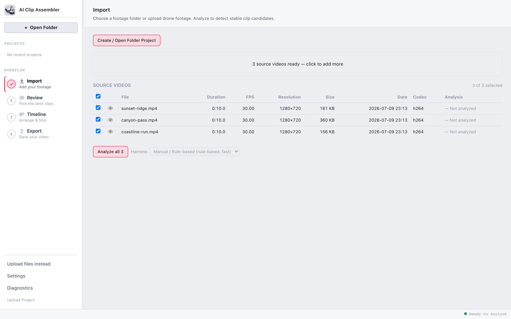
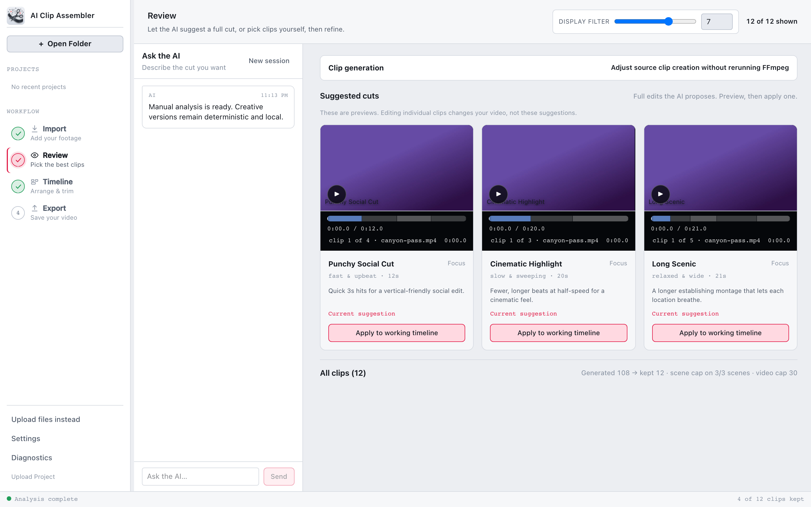
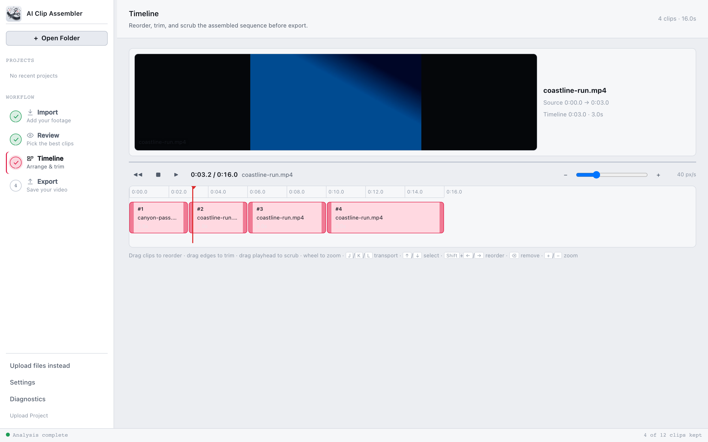
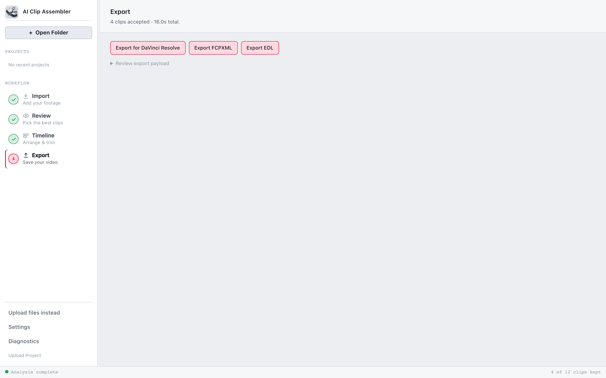

Four steps from SD card to sequence
The workflow reads left to right, like your timeline will.
Drop in the raw files
Point it at a folder of MP4/MOV files. Each video is probed for duration, frame rate, and codec, then analyzed for stable, interesting moments — scene by scene, on your own hardware.

Review clips. Build a montage.
Every candidate arrives with scores and a reason. Include the keepers, exclude the rest, then ask the optional AI agent for editable versions: a punchy social cut, cinematic highlight, or long scenic montage. Compare the options, apply one to the Timeline, and keep the final call.

Trim like you mean it
Reorder by dragging, trim from clip edges, scrub the ruler, and play it back with J K L transport keys. Every edit — yours or the AI's — lands in one undo history.

Hand off, don't lock in
Export a real, editable timeline — DaVinci Resolve XML, Final Cut Pro FCPXML, or plain EDL — with media paths that survive moving the project folder. Finish the cut in the editor you already trust.

Local-first, by decision
Not a setting buried in preferences — an architecture decision, recorded and enforced in the codebase.
Your footage stays
Analysis, scoring, and playback run entirely on your Mac. Cloud AI is opt-in per project, with explicit consent before a single frame leaves — or run the rule-based mode with no AI at all.
Bring your own AI
Already talk to Claude Desktop or Codex? Connect it in Settings and ask it to review candidates or edit your timeline. Its edits appear live in the app — and every one is undoable.
Open source
The whole app — backend, UI, and the architecture decisions behind it — is on GitHub. Read the code that promises your footage never leaves.